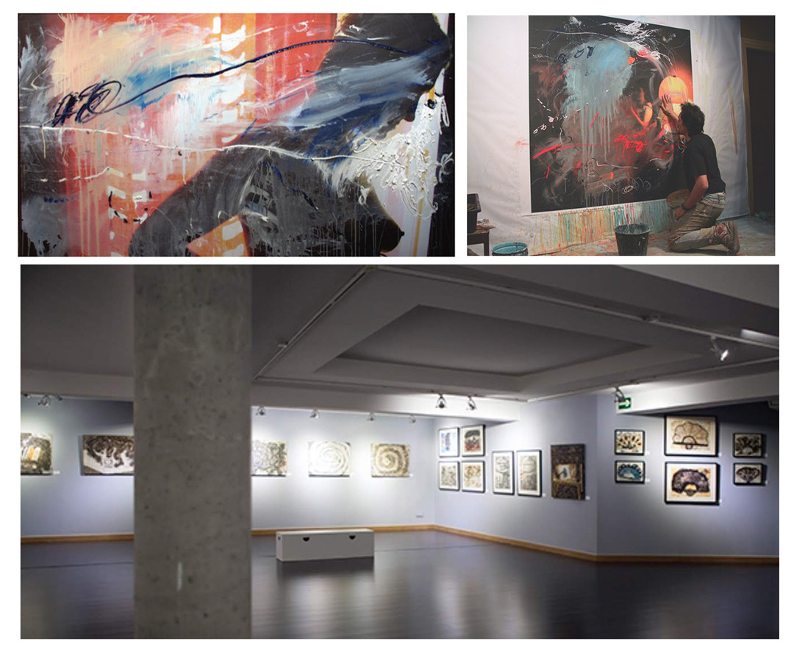
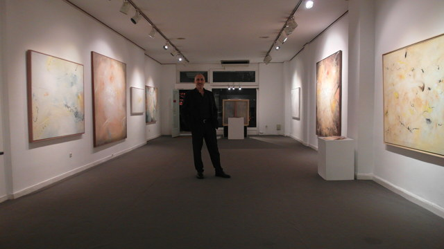
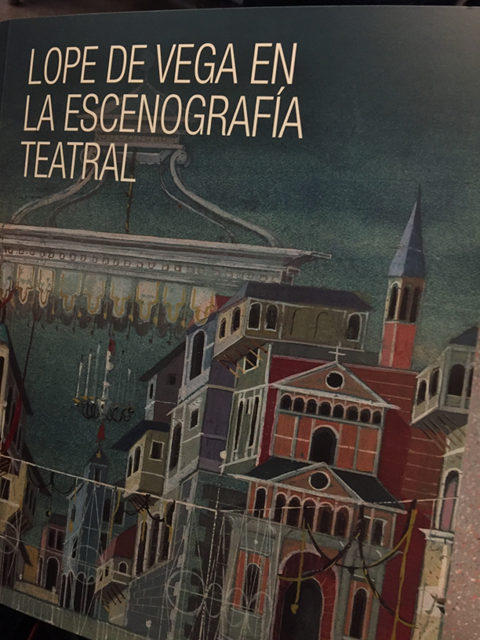
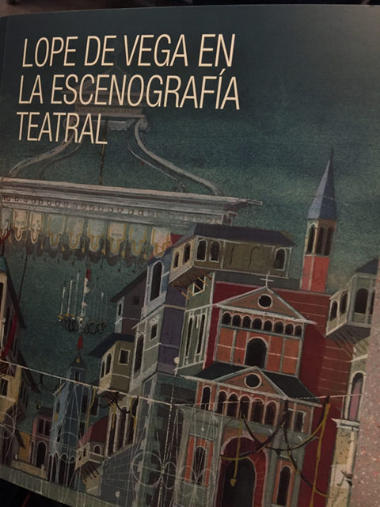

Exposición individual en el Museo de la Ciudad de Móstoles.
Seleccionado convocatoria de espacios expositivos 2020. Con el proyecto Revisitando Intimidad. (Fecha por determinar.)
La serie de pinturas y dibujos Intimidad comienza con algo tan sencillo como unas fotografías personales. Hace casi veinte años. Y continúa hasta la actualidad. Una serie de instantáneas de vivencias personales intimas, relacionadas con la vida cotidiana que utilizo desde entonces a modo de soporte pictórico.
Así, las fotografías se cubren de trazos de pintura, colores, texturas y pinceladas con líneas gruesas y delgadas, largas y cortas…las imágenes que un día tuvieron identidad propia pasaron a convivir con una abstracción. Lo que en un comienzo no fueron sino bocetos e ideas trazadas a modo de preparación, se convierten a la postre, en una obra por sí misma, sólida y reveladora: mi intimidad.
Exposición Individual: Lo Invisible. Pinturas sobre música.
Del 16 de noviembre al 8 de diciembre de 2018 la Galería Gaudí de Madrid abre sus puertas a la exposición individual del pintor Arturo Martín Burgos.
Cerca de 50 obras (lienzos de todos los formatos, dibujos y collages) componen esta muestra de trabajos realizados durante los últimos diez años por el pintor madrileño.
Basados en la música de Schoenberg, Bruch y en su mayor parte del compositor francés Olivier Messiaen, los cuadros buscan un acercamiento gestual a la música, tan salvaje como reflexivo, que invita al espectador a disfrutar de emociones y experiencias cercanas a la pura sensación física y sonora del hecho musical.



Exposición: Lope de Vega en la escenografía teatral
En la Casa Museo Lope de Vega de Madrid, del 27 de abril al 2 de junio de 2017.
El comisario de la exposición Manuel R. Massip selecciona para esta muestra varios bocetos de diversas escenografías, incluyendo la maqueta realizada para La Judía de Toledo.


 
